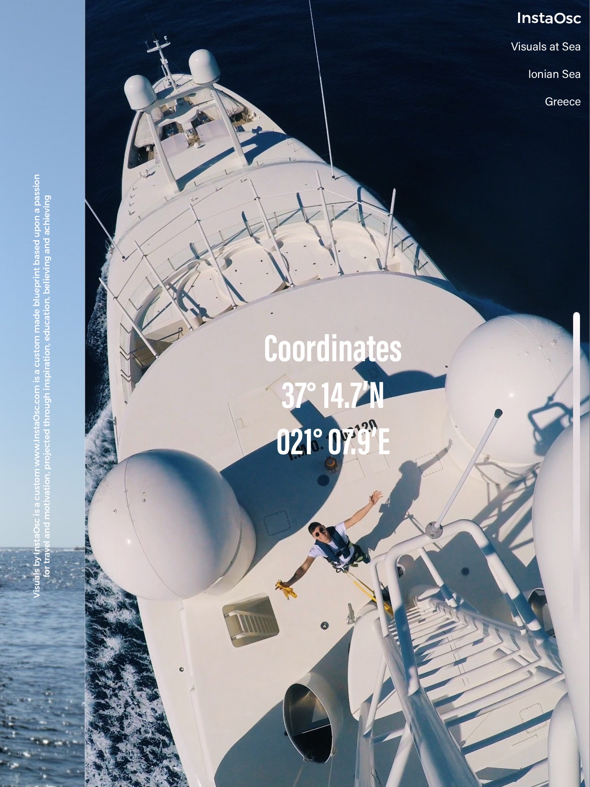
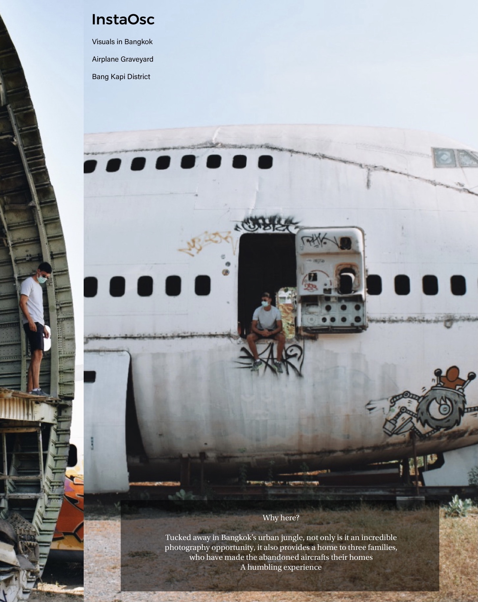
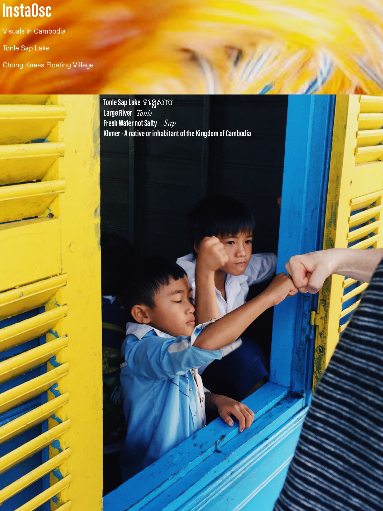
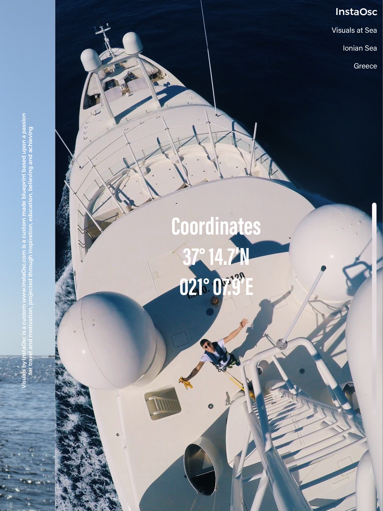
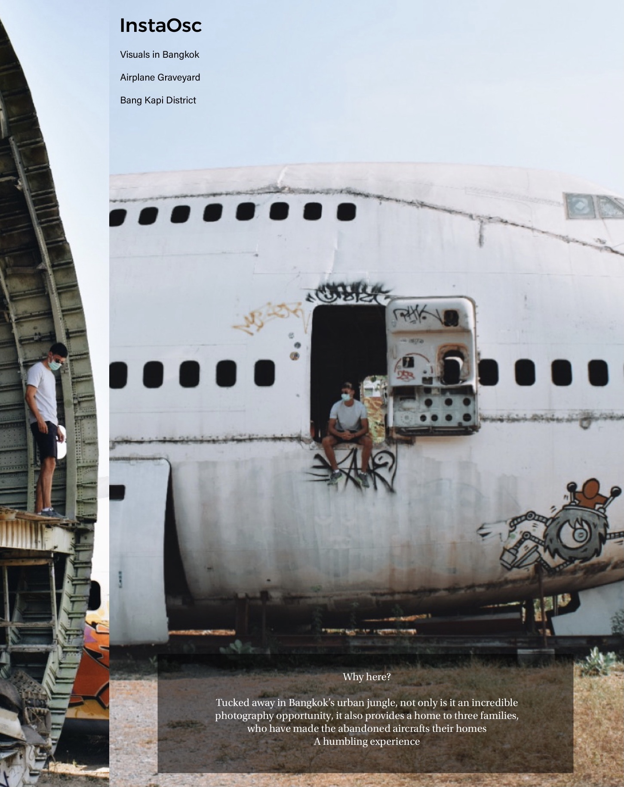
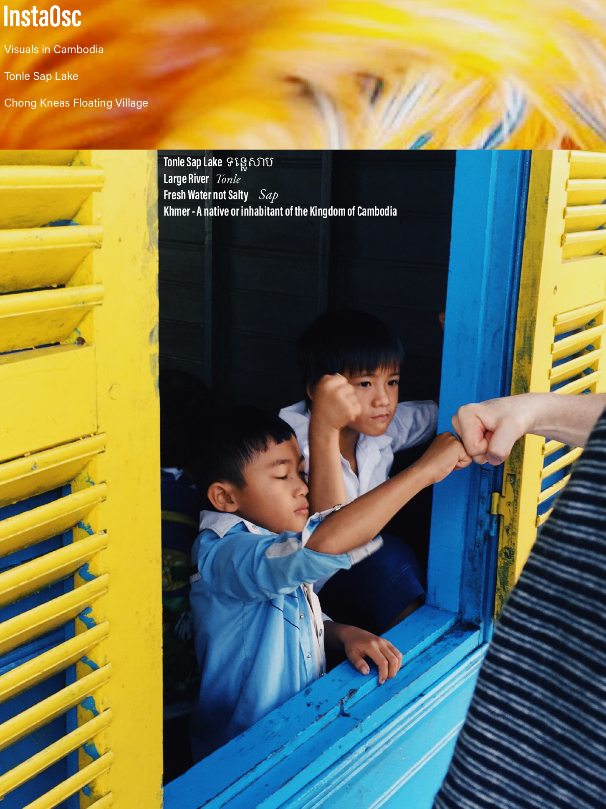

Having moved back from the U.S.A recently, i took it upon myself to learn coding with the help of Code Lancashire,
in search of a new career, previously i was in the yachting and hospitality industry's, see below for my career so far!
Yachting Industry (MY Element, Sarafsa and Enterprise)
June 2020 - March 2023 / Chief Officer
I flew to the South of France in June 2020 without a job
and it took me 8 days to land my first full time role in the
superyacht industry with no prior experience.
I started out as a deckhand, working in a team of 6
looking after the exterior of the superyacht, and also
taking the owner to and from shore via a 10m tender
often in high pressured weather conditions.
Within two years i landed a job as Chief Officer where i
dealt with the safety aspects onboard, crew
documentation, crew wellbeing, route planning and also
managing a team of 1 to 6 deckhands on the deck itself.
In 2022 i was put in charge of an atlantic ocean crossing
on the dockwise express, on 24 hour call along the 2
week route from Genoa to Fort Lauderdale.
This time in the yachting industry grew my interpersonal
and team building skills as i was dealing with crew,
guests and owners from all different nationalities and
backgrounds
I would often help the interior team with service if they
were a crew member down, in such situations it taught
me how important is is to have a multi skilled team, as
the superyacht industry can be notoriously demanding,
it was vital for me and my team to be able to analyse and
anticipate specific situations quickly and efficiently.
Events and Communications Manager
2012 - 2015 at Campbell & Rowley Events Management
In the role as Senior events and Communications
Manager i would plan events on an internal software
system where i would include every detail you needed to
create events of all types, from 1 to 20,000 attendees
Along with the paperwork side to the job, I would also be
in charge of setup, service and clear-down for large
scale events including 1000+ attendees at business
awards/corporate dinners, along with a variety of
sporting venues
On the largest events i would be in charge of around 100
employees, on such occasions working closely with
clients such as Singer Camilla Cabello, and the head of
hospitality for Manchester United
From the start of the process i would liaise with clients,
creating their dream event, signing the contract and
then managing the operation from setup to delivery until
clear down, these were often very long and demanding
shifts.
Octopus Hospitality, Melbourne - Australia and Lindum Hotel, Lytham St Annes
January
2010 - April 2015
Hospitality work in prolific Australian venues such as the
MCEC, MCG, AAMI Park, Flemington Racecourse and
being requested by Deloitte bank to work in house at
their main offices in the logistical area
Lindum Hotel Ltd, Lytham St Annes - England,
September 2011 - December 2014
For my first ever job. I washed pots at an 82 bedroom
hotel in my hometown, during these years i worked my
way up through all the departments including
maintenance, front of house, kitchen work, reception and
events, finally ending up as junior hotel manager,
planning group and individual bookings on a software
called Hotel Executive
 




